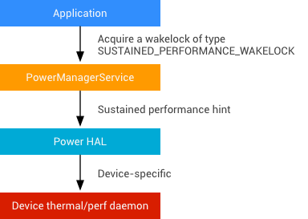

Managing the power and performance of Android devices can help ensure applications run consistently and smoothly on a wide range of hardware. In Android 7.0 and later, OEMs can implement support for sustained performance hints that enable apps to maintain a consistent device performance and specify an exclusive core to improve performance for CPU-intensive, foreground applications.
For long-running applications (games, camera, RenderScript, audio processing), performance can vary dramatically as device temperature limits are reached and system on chip (SoC) engines are throttled. App developers creating high-performance, long-running apps are limited because the capabilities of the underlying platform are a moving target when the device begins to heat up.
To address these limitations, Android 7.0 introduced support for sustained performance, enabling OEMs to provide hints on device performance capabilities for long-running applications. App developers can use these hints to tune applications for a predictable, consistent level of device performance over long periods of time.
An Android application can request the platform to enter a sustained performance mode where the Android device can keep a consistent level of performance for prolonged periods of time.

Figure 1. Sustained performance mode architecture
To support sustained performance in Android 7.0 and later, OEMs must:
POWER_HINT_SUSTAINED_PERFORMANCE in
power HAL.isSustainedPerformanceModeSupported() API.Window.setSustainedPerformanceMode.In the Nexus reference implementation, the power hint caps the maximum frequencies of the CPU and GPU at the highest sustainable levels. Keep in mind that lowering the MAX bar in CPU/GPU frequency will lower the frame rate, but this lower rate is preferred in this mode due to its sustainability. For example, a device using normal max clocks might be able to render at 60 FPS for a few minutes, but after the device heats up, it may throttle to 30 FPS by the end of 30 minutes. When using sustained mode, the device can, for example, render consistently at 45 FPS for the entire 30 minutes. The goal is a frame rate when using the mode that is as high (or higher) than the frame rate when not using the mode, and consistent over time so that developers don't have to chase a moving target.
We strongly recommend implementing sustained mode such that the device achieves the highest possible sustained performance—not just the minimum values required to pass the test (e.g. choose the highest possible MAX frequency caps that do not cause the device to thermally throttle over time).
Note: Capping MAX clock rates is not required to implement sustained mode.
OEMs can use a CTS test (Android 7.0 and later) to verify their implementation of the sustained performance API. The test runs a workload for approximately 30 minutes and benchmarks the performance with and without sustained mode enabled:
In addition, you can manually test your implementation with several CPU- and GPU-intensive workloads to ensure the device does not thermally throttle after 30 minutes of use. In internal testing, we used sample workloads including games and benchmarking apps (e.g. gfxbench).
For CPU-intensive, time-sensitive workloads, getting preempted by another thread can be the difference between making frame deadlines or not. For apps that have strict latency and frame rate requirements (such as audio or virtual reality apps), having an exclusive CPU core can guarantee an acceptable level of performance.
Devices running Android 7.0 or later can now reserve one core explicitly for the top foreground application, improving performance for all foreground apps and giving apps with high intensity workloads more control over how their work is allocated across CPU cores.
To support an exclusive core on a device:
cpusets and configure a cpuset that
contains only the top foreground application.cpuset.To determine which processes are scheduled on which cores, use
systrace while running any workload and verify no userspace threads
from applications other than the top foreground application are scheduled on the
exclusive core.
To view a reference implementation for the Nexus 6P, refer to
android//device/huawei/angler/power/power.c.